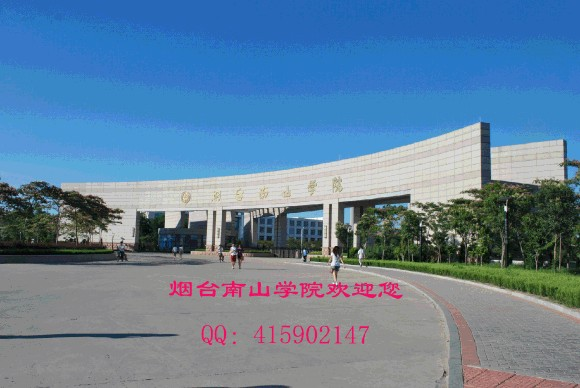

山风海韵育英才
烟台南山学院地处新兴海滨城市山东龙口，建有南山和东海两处校区。南山校区紧邻国家5A级旅游风景区，东海校区面向大海之滨万亩黑松林。智者乐水，仁者乐山。这里有南山的壮美，东海的浩瀚；
这里有南山集团的强大支持，这里是民办高校的成功典范。

烟台南山学院是由稳居中国企业500强前列的大型民营股份制企业南山集团投资兴办、教育部批准兴办的普通本科院校。南山学院依托南山集团强大的经济实力，立足胶东，着眼山东，面向全国，以工为主，工、管、文协调发展，培养高素质的应用人才。学校占地面积3028亩，建筑面积77.23万平方米。现有工学院、商学院、人文学院、航空学院、音乐学院、健康学院6个二级学院，75个本专科专业，29个系（部、中心），涵盖工学、管理学、文学、艺术学等学科门类，在校生1.8万余人。
武汉大学中国科学研究评价中心和中国科教评价网联合发布的2016年中国民办院校竞争力排行榜中，烟台南山学院名列全国民办高校第六名、山东省民办高校第一名。
优良的师资队伍——专家治校，教授治学。学校遵循教育规律，秉承人才强校理念，用事业凝聚人、用实践造就人、用机制激励人、用制度保障人，铸就了一支以专家教授为骨干，以硕、博研究生为主体的教师队伍。这里既有中外名校的资深教授，也有中外科学院的著名院士，还有南山集团、中创软件等中国知名企业的科研人员。专家荟萃，名师集聚，积极科研，精心教学。
先进的教学设施——持续投入，追求高端。图书馆建筑面积近3.8万平方米，馆藏纸质图书近183万余册，电子图书180万余种。学校建有各类实验室216个，建筑面积约5.7万平方米。其中既有机械工程实验中心，电气信息实验中心、商科实验实训中心等教学设施，也有国家级“铝合金压力加工工程技术研究中心”、高水平纺织工程综合实验室等科研设施；航空专业建有陆空通话实习室、模拟飞行实习室、风洞实验室、高性能全动模拟机等实验设备，目前拥有东营、滨州两个航空训练基地。
坚实的实践平台——校企融合，注重实践。校企紧密融合、深度融合、高端融合，搭建学生基础技能操作平台、专业技能训练平台、综合技能应用平台，联手培养高层次应用型人才。2013年“烟台南山学院-南山集团公司工程实践教育中心”获批国家级大学生校外实践教育基地。2015年学校与澳大利亚羊毛发展有限公司（AWI)、中创软件等国内外100多家企业联手合作，按企业经营管理技能要求组织实践教学，有效提升学生的实践技能和就业能力。
广阔的就业前景——敏而好学，学以致用。学校实现了专业设置、招生、培养和就业联动，每年与南山集团、中煤工矿集团、中创软件等40余家企业签订“订单培养”协议，学生就业工作满意率高达90%以上。构建了完善的就业招聘服务体系，每年开展企业专场招聘会、专业专场招聘会、学院供需见面会，进校招聘企业多达800余家。学校不断加强创新创业教育，
建有大学生创业孵化基地，努力提升大学生创业水平，鼓励学生走上社会自主创业。2015年，烟台南山学院应届毕业生总体就业率高达99.49%。
丰富的校园文化——山风海韵，文化育人。学校成立了55个文体教学俱乐部，进一步探索了文体教学新路子；学校设立了广播电台、校园网站、《烟台南山学院报》，进一步巩固了文化舆论宣传阵地；学校成立了东海交响乐团、管弦乐团、爱乐合唱团等文艺社团，为文艺爱好者搭建了重要活动平台。学校在举办计算机文化、外语文化、体育文化、大学生文化等四大艺术节的基础上，倾力打造山风海韵大学生才艺大赛校园文化品牌，其中的金话筒大学生主持人大赛，随拍客大学生摄影大赛，好声音大学生校园歌手大赛，翰墨情大学生书画艺术大赛，为大学生展现才艺提供了用武之地。
完善的助学体系——爱心助学，求学无忧。学校不断拓宽助学途径，逐渐完善“奖、助、贷、勤”资助体系。近三年，共有60余人获得国家奖学金，1600余人获得国家励志奖学金，230余人获得省政府励志奖学金，30余人获得省政府奖学金，760余人被评为山东省优秀毕业生，80余人被评为山东省优秀学生干部、优秀学生，累计有9600余人次获得国家和省政府的各类奖助学金，帮助6400余名学生申请到生源地助学贷款。
舒适的生活环境——各种功能，一应俱全。学生餐厅被山东省卫生厅评为“食品卫生等级A级单位”，学生宿舍被山东省教育厅高校后勤管理处公寓评比为优秀单位。学生公寓设置独立的学习间、卫生间、阳台，水、电、暖样样具备，有线、无线网络配备齐全。学校既有便捷的餐厅、浴池、超市、理发等生活设施，也有高标准的体育场馆、礼堂剧院等文体建筑，还有功能先进的国际会议中心、大学生活动中心等活动场所，为大学生舒适生活奠定了坚实基础。
骄人的办学业绩——凝心聚力，追求卓越。2014年以来，学校取得了22项省级及以上质量工程与标志性成果。材料成型及控制工程、电气工程及其自动化、旅游管理、自动化、纺织工程、飞行器动力工程、环境设计7个专业被评为省级优势特色专业。《基于精品课程群建设的管理类应用型本科教学质量提升途径探索与实践》、《材料工程应用型创新人才培养教育模式的探索与实践》、《搭建创新实践平台，提升电子信息类人才创新能力的研究与实践》三项教学成果获山东省高等教育教学成果奖。《节能环保产业发展评价及推进策略研究》，获得国家社会科学基金立项。学校先后被授予
“全国职业教育先进单位”、“中国校企合作先进院校”、“全国首批就业型大学”等荣誉称号。（以上数据截止到2016年6月30日）
学校具体地理位置及乘车线路：
东海校区位于山东省烟台龙口市黄城（黄县）南山东海开发区大学园区。乘公交车至黄城（黄县）车站后，车站十字路口往西50米路北可乘坐7路或12路公交车至南山学院东海校区。
南山校区位于山东省烟台龙口市黄城（黄县）南山工业园文教区南山中路一号。乘公交车至黄城（黄县）车站后，在车站十字路口往南50米路西可乘坐市内10路公交车至南山校区。
{% endblock %}